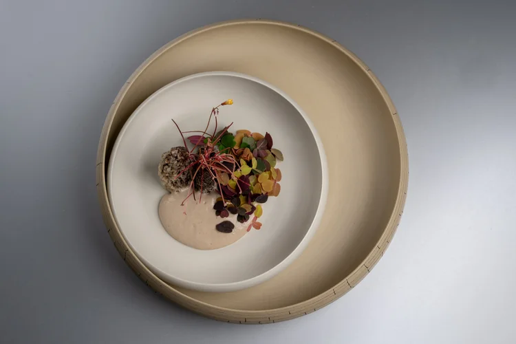

“Roasted Chestnut Velouté with Crispy Pork and Herb”
A silky chestnut velouté finished with small, precise garnishes of crispy pork and fresh herbs. The flavours stay light and quiet, like a soft introduction to the tasting menu, focused on purity rather than heaviness.